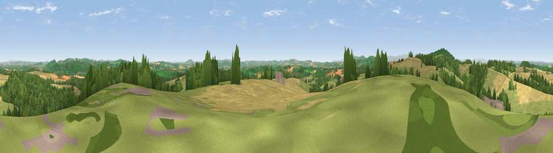

Viewpoint near Little Dewchurch
#4318 in England · top 12% of its area beats it · near Little DewchurchThe view, rendered

A 360° render of this exact spot computed from the terrain model, tree cover and land cover — summer colours, afternoon light, calibrated against photographs of famous viewpoints. Real trees, hedges and buildings will differ in detail.
The panorama
Grey silhouette: terrain skyline in each direction (720 bearings, Earth curvature and refraction included). Dashed green: skyline with trees (+15 m) and buildings (+8 m) as obstacles. Blue strip: how far the ground is visible on each bearing.
Where the view opens
Wedge length = distance to the farthest visible ground on that bearing (vegetation-aware). Rings at 10, 25 and 50 km.
What fills the view
37% grassland · 34% cropland · 28% woodland ·
Angular shares of the visible panorama (visual magnitude), not map area. Landscape diversity 0.49 (0–1 Shannon).
Key numbers
More beautiful places nearby
The staircase of upgrades: each row has a higher view potential than everything closer. Driving times are estimates from straight-line distance, calibrated against real road routing — check an actual route before setting out.
| Place | Direction | Drive | Score |
|---|---|---|---|
| Viewpoint near Aconbury | WNW · 3 km | ~8 min | 76.5 |
| Viewpoint near Orcop Hill | WSW · 7 km | ~14 min | 79.9 |
| Viewpoint near Orcop Hill | WSW · 8 km | ~16 min | 80.7 |
| Seagar Hill | NE · 10 km | ~20 min | 82.1 |
| Garway Hill | SW · 12 km | ~23 min | 84.6 |
| Millennium Hill | ENE · 23 km | ~39 min | 86.9 |
| Worcestershire Beacon | ENE · 27 km | ~43 min | 87.1 |
| Viewpoint near West Quantoxhead | SSW · 99 km | ~123 min | 87.9 |
51.98407, -2.67449 · source: screening · position refined by local search. Computed location — check access rights before visiting.